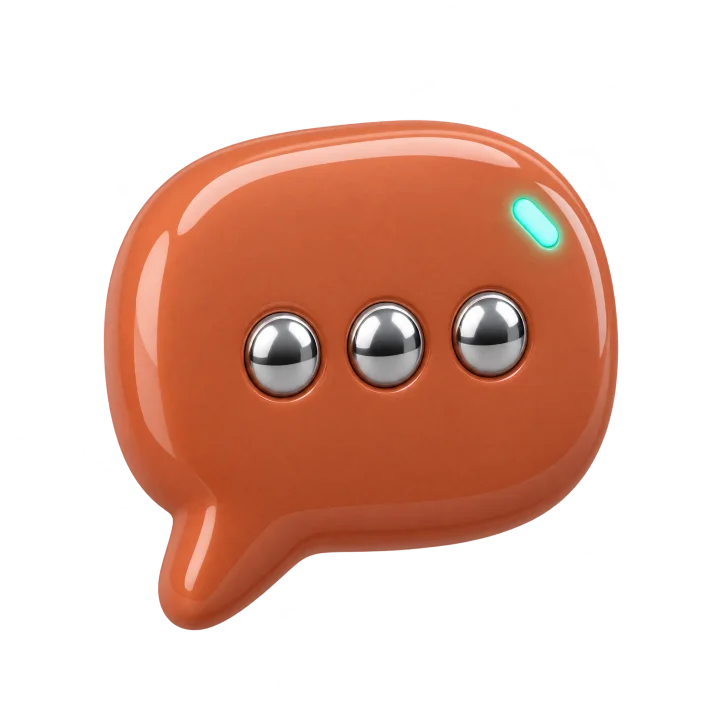
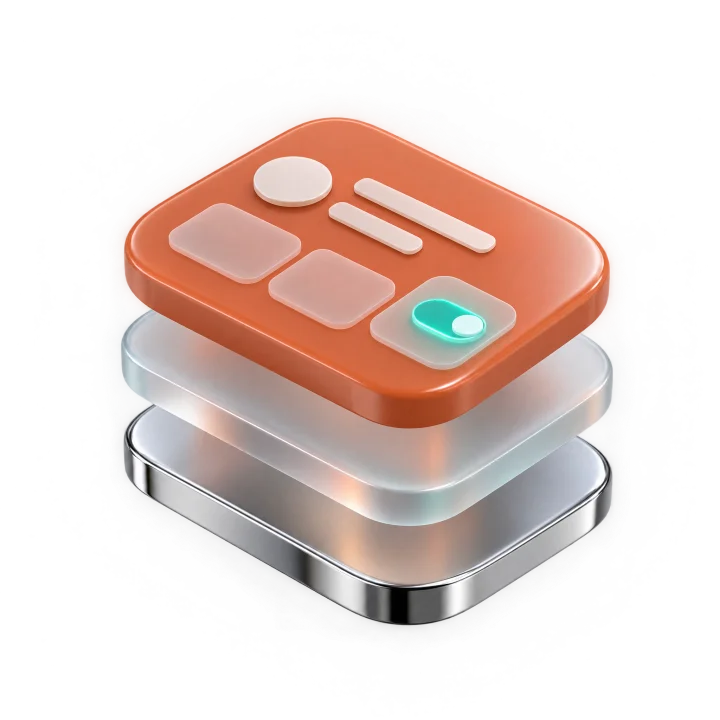
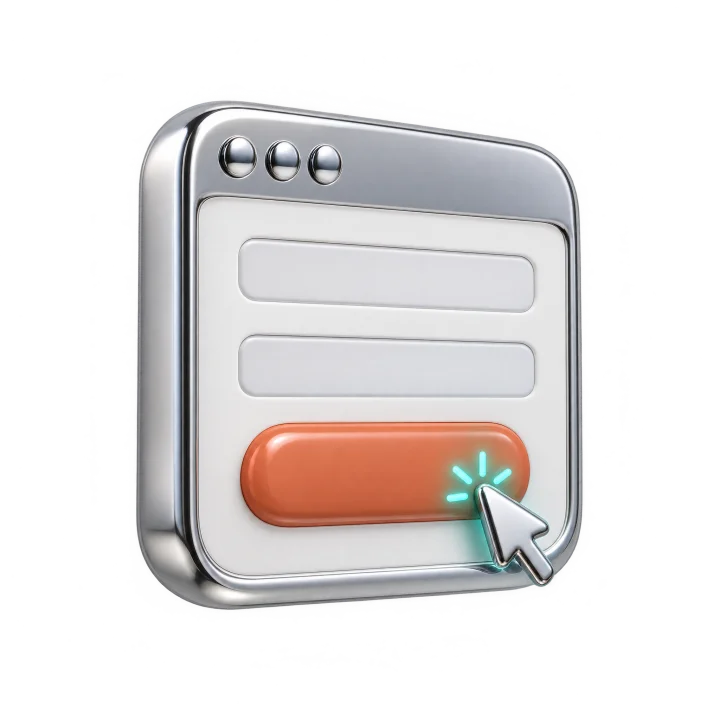
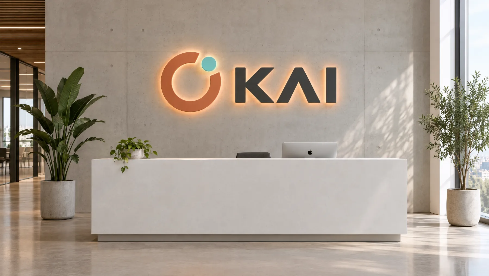
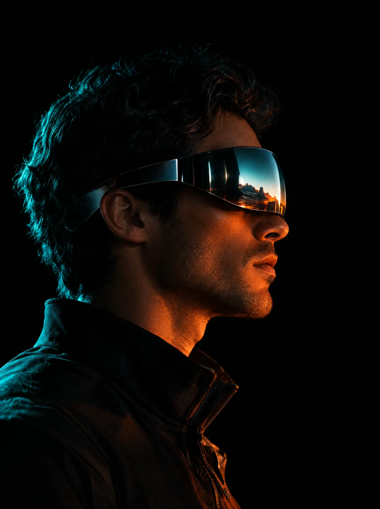

Польза01
0+ ч
рутины в месяц возвращаем команде
и вернём команде от 40 часов в месяц — или не возьмём оплату
Пишем сервисы, ботов и интеграции под ваши процессы. Код создаём вместе с ИИ — поэтому сдаём за недели, а не за кварталы.
30 минут в Zoom. Покажем, что автоматизировать
и сколько это сэкономит.
рутины в месяц возвращаем команде
один процесс — от разбора до запуска
если не уложились в срок
3 проекта — столько берём в этом месяце, чтобы сдать каждый вовремя
Пять сцен, которые мы видим почти в каждой компании до автоматизации. Если хотя бы одна про вас — дальше будет полезно.
Менеджеры переносят заявки из WhatsApp в таблицу руками — и часть по дороге теряют.
Отчёт для вас собирают два дня, а цифры в нём всё равно не сходятся.
Клиент ждёт ответа три часа и уходит к тому, кто ответил за пять минут.
CRM купили, но ею пользуются два человека из десяти.
Чтобы вырасти, приходится нанимать ещё людей на ту же самую рутину.
Проблема не в людях. Люди делают работу, которую должна делать программа.
Пять направлений — одна цель: чтобы данные двигались сами, а люди занимались тем, за что им платят.
Квалифицируют заявки, отвечают на типовые вопросы и сами записывают на встречу — днём, ночью и в выходные.

CRM, мессенджеры, 1С, таблицы и платежи обмениваются данными без ручного переноса.
Личные кабинеты, панели, калькуляторы — ровно под то, как работает ваша команда.

Продажи, финансы и реклама собираются сами — без «скинь табличку».
Заявка с сайта попадает в CRM, а менеджер получает уведомление через секунду.

Скорость фрилансера, ответственность студии. И пять правил, которые мы не нарушаем.

Код пишем с ИИ, поэтому типовой проект занимает 2–4 недели, а не полгода.
Если автоматизация не окупится за 6 месяцев, скажем об этом до договора.
Сумма в договоре не меняется, а за просрочку отвечаем деньгами.
Код, доступы и инструкции остаются у вас. Вы от нас не зависите.
За плечами обучение 51 сотрудника в корпоративном проекте. Внедряем так, чтобы люди этим пользовались.
Мы честно говорим «нет», когда автоматизация не принесёт вам денег. Так лучше для обоих.
Находим процесс, который съедает больше всего времени, и считаем, сколько он стоит вам в месяц.
Фиксируем, что делаем, когда сдаём и сколько это стоит. Цифры в договоре больше не меняются.
Каждую неделю показываем работающую часть, а не отчёт о проделанной работе.
Обучаем команду и бесплатно правим всё, что всплывёт в первый месяц.
Ниша → что было → что сделали → цифра. Без «повысили эффективность».
* Цифры в кейсах иллюстративные — структура карточки для реальных проектов.
На разборе назовём процесс, который стоит автоматизировать первым, срок и цену. Заказывать после этого необязательно.
